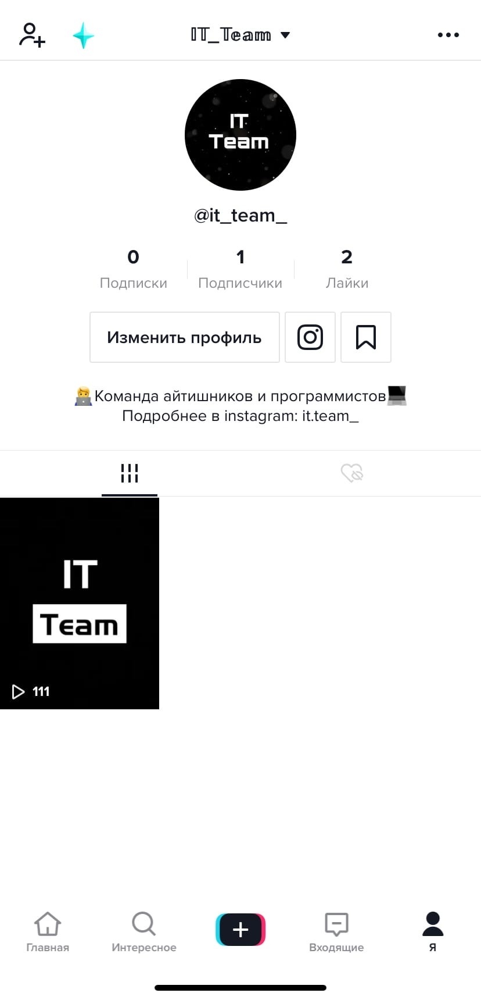
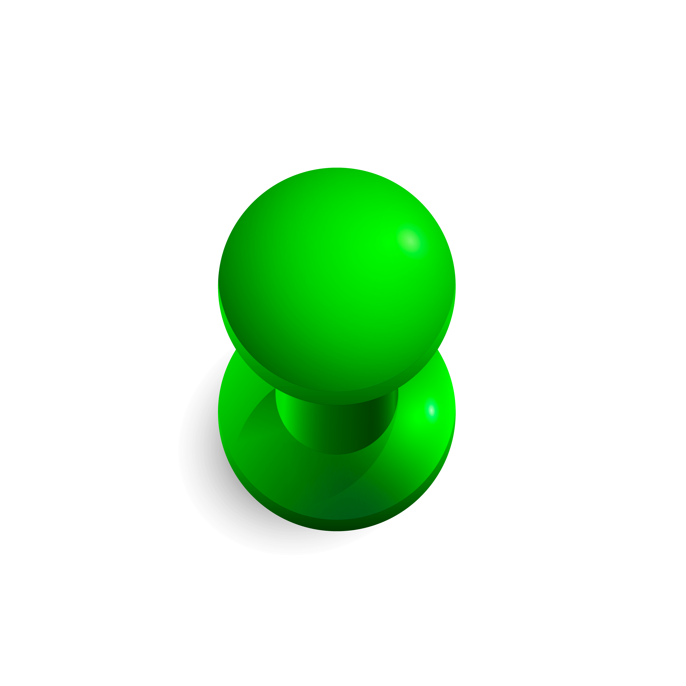

Мы будем вам очень благодарны, если вы присоединитесь к нам или поделитесь со знакомыми. Вы можете найти нас в Tik Tok: @it_team и в Instagram: it.team_ . Пишите нам в директ и подписывайтесь на наши аккаунты!
Начало в Tik Tok
Разработка концепции
Как я уже рассказывала, основную часть нашего контента составляют мемы и весёлые ролики на тему программирования. Мы часто поднимаем темы, которые заставляют людей вспомнить себя в такой же ситуации и ещё раз посмеяться. В других же роликах мы рассказываем и показываем разнообразие кода и программ. Но просто создать аккаунт и начать снимать было недостаточно. Первым нашим шагом создало создание тизера команды, в котором мы вкратце попытались рассказать, что произошло. Сразу после создания тизера
пришлось задуматься и над эмблемой команды. Она была оперативно создана и загружена в наши профили в ближайшее время. После выхода тизера - по совместительству нашего первого видео - мы стали активно следить за статистикой просмотров.
На самом деле, я говорю "мы" потому что наша команда имеет двух создателей и по сути своей двух админов. Идея создания своей команды пришла моему лучшему другу примерно две недели назад. Той ночью мы занялись созданием профилей, тизера и эмблемы. После этого мы прошли этап распределения обязанностей: разработка идей, обработка видеоматериалов, монтаж роликов и создание текстовых описаний к видео. К сожалению, я не могу раскрыть личность второго создателя нашего аккаунта.
Первые ролики
Первым нашим роликом (после тизера) стал "преобразованный" мем. Вначале, мы нашли хороший звук от мема, который не имел более одного видеоролика под этот звук. После того как мы придумали шутку, необходимо было собственноручно снять отрывок для видео. На этот короткий момент ушло достаточно много дублей, для того, чтобы за небольшой промежуток времени зритель успел понять, какое действие мы хотим показать.
После выпуска ролика мы заметили, что у него очень быстро растут просмотры, с учётом того, что на тот момент у нас не было ни одного подписчика. Это могло означать только то, что наше видео попало в Рекомендации, что не могло не радовать.
Вторым видео мы решили опробовать немного другой формат нашего профиля. Решено было показать зрителям интересные коды, которые постоянно находятся в движении. Мы решили использовать для этого видео песню Little Big - UNO , что чисто теоретически могло бы увеличить шансы этого видео на попадания в Рекомендации.


По статистике, этот ролик набрал гораздо меньше просмотров, чем его предшественник. С одной стороны, это было предсказуемо, так как мемы в наше время намного чаще можно встретить в Рекомендациях, ведь их могут показывать всем. Видео же, направленные конкретно на it-сферу, в первую очередь показываются в так называемых Рекомендациях-по интересам (т.е. тем людям, кто этим интересуется).
Тогда мы поняли и определились для себя, что будем создавать некий баланс между мемами и более познавательными роликами. Разумеется, чтобы набрать аудиторию нам нужно как можно чаще появляться в Рекомендациях, чтобы люди заметили наш профиль. Поэтому, пока мы находимся на стадии "раскрутки" большую часть публикуемого контента придётся оставлять под мемасики.
Таким образом, мы продолжаем понемногу развиваться и набирать подписчиков. Конечно у нас есть грандиозные планы, но мы понимаем, что на их реализацию уйдёт немалое количество времени и терпения. Но мы будем очень стараться делать интересные видео и дальше
и будем очень рады видеть вас у себя в аккаунтах)